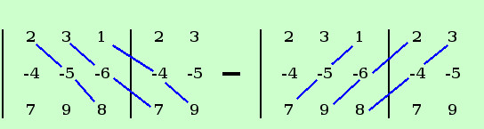

|
sviluppo Dato il seguente determinante calcolarne il valore, ove possibile, con la regola di Sarrus
Aggiungiamo le due colonne e poi facciamo i calcoli  D = 2·(-5)·8 + 3·(-6)·7 + 1·(-4)·9 - 7·(-5)·1 - 9·(-6)·2 - 8·(-4)·3 = -80 - 126 - 36 + 35 + 108 + 96 = - 3 |